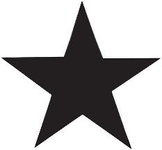

Informações Básicas
Criadores (a.k.a estrelas) são os pilares da criação do universo, seres com poderes inimagináveis capazes de manifestar absolutamente qualquer coisa que seja desejo deles. Tamanho poder vêm acompanhado de um racional diferente do que estamos habituados, suas vontades parecem ser completamente instintivas e seus motivos são misteriosos.
Os criadores mudaram muito ao longo das eras, à medida que o tempo passava, a influência deles sobre os aspectos da realidade foi ficando cada vez mais nichada a conceitos específicos
Lista de Criadores
- Tiamat
- Kahrma
- Sut'uun
- Liliette (Vida)
- Nerthos (Morte)
- Garuda (Sangue e da Carne)
- Aivy (Natureza)
- Indra (Fogo)
- Niviel (Gelo)
- Anahita (Água)
- Mãe Vermelha (Terra)
- Varin(Vento)
- Ligia (Saúde)
- Morphegos (Peste)
- Zarion (Ordem e conhecimento)
História dos Criadores
Era de Tiamat
O primeiro de todos os criadores só expressou um desejo durante toda a sua existência: Preencher o vazio, sendo assim, ele se fragmentou em incontáveis outros criadores, que carregavam sua vontade incial de preencher o universo.
Tiamat, foi um dos fragmentos que saiu do Primeiro criador, e ela movida pela vontade herdada de sua estrela pai, começou a desenhar o que ela sentiu que deveria existir. Assim, surgiu o esboço do planeta que conhecemos como Santuário. Ela criou a terra, as nuvens e o tempo, mas ela percebeu que lhe faltava algo. Tiamat não podia avaliar sua própria criação, ela não podia ser juíza do que ela mesma fez, não havia uma métrica definir se sua criação merecia preencher o espaço. Foi então que ela teve a ideia de se fragmentar em duas. Porém, suas estrelas filhas deveriam seguir regras para que sua criação se mantivesse erguida, e então ela criou um Domo ao redor do Santuário. Este domo, era capaz de impedir com que até mesmo ela pudesse manifestar destruição diretamente sobre a superfície do Santuário. Contente com a sua linha de defesa, ela então se dividiu.
Era de Kahrma e Sut'uun
Kahrma e Sut'uun foram as estrelas que surgiram à partir de Tiamat, os dois criaram o primeiro laço entre dois indivíduos no nosso mundo, seja amizade, amor, paternidade, a ligação que eles tinham era de simultaneamente irmandade por compartilharem o mesmo progenitor, quanto de carinho por estarem lá um pelo outro em meio a um mundo tão vazio. Primeiro, as montanhas e o fogo surgiram por vontade de Sut'uun, os rios e os ventos por vontade de Kahrma, e assim foi se fazendo o Santuário.
Porém, à medida que eles criavam as maravilhas do planeta, mais e mais eles se viam influenciados pelas suas próprias criações, as montanhas deixaram ambos mais ambiciosos, com a fome de criar coisas grandes e resilientes; as marés fizeram com que ambos quissesem criar ilhas e arquiélagos, para que a beleza de cada obra ficasse isolada das outras. Mas foi quando Kahrma criou a vida que tudo mudou.
As primeiras plantas fizeram com que ambos conhecessem a luta pela sobrevivência, a disputa por recursos e espaço fez com que as estrelas se tornassem rivais. Disputando por quem teria a melhor posição abaixo do sol, quem teria o jardim mais próximo ao leito dos rios, as florestas mais densas e as flores mais bonitas. Com os animais, eles conheceram a caça, o sangue a carne, foi quando eles conheceram a dor.
Foi quando Kahrma criou a primeira espécie inteligente -os humanos- que Sut'uun fez uma proposta a Kahrma: Abandonar as rivalidades e reconstruir um santuário sem vida. Para Sut'uun, suas criações tinham influenciado a ele e Kahrma de forma que se continuassem com a disputa, eles jamais seriam parceiros como antes. Embora eles não pudessem simplesmente apagar a vida por conta do domo, eles poderiam criar predadores naturais para todas as espécies, ou provocar condições naturais não favoráveis no ambiente. Mas Kahrma recusou, essa decisão não veio de ódio contra a estrela rival, mas sim por amor a suas criações. Kahrma enxergou nos humanos algo além da violência e da brutalidade, ela viu que também eram uma raça capaz de amar, de sentir, de coexistir, essa visão deu a Kahrma uma nova ótica a suas criações como um todo, ela enxergou nelas o que tinha perdido com sua estrela amiga.
Guerras de Santa Kahrma e Lorde Sut'uun
Assim, Sut'uun declarou guerra a sua antiga amiga, ele declarou que o norte do Santuário seria seu, para criar um exército capaz destruir toda a vida no santuário, ele fez com que as terras ao norte se tornassem o mais inabitáveis quanto possível.